Desde principios de 2026 uso Claude en mi trabajo. Sistemas tenía dudas razonables sobre los datos, la red y Sage, y buscamos juntos una forma segura de hacerlo. Esto es lo que hemos montado y lo que ya funciona.
Una skill decía cómo tenía que ser cada descripción. Varios agentes de IA, con Codex y Claude Code, investigaban los datos de cada producto y escribían la suya, personalizada.
V:, X:, Y:, Z:, EDI, XRT y el servidor. Ni para mirar.
Una carpeta en el Escritorio. A la red lo subes tú.
Antes te enseña la lista exacta de lo que va a borrar.
Buscar, filtrar y descargar. Nada de crear, cambiar o borrar (fase 1).
La Business, que cumple el RGPD. Nunca una cuenta personal.
Cualquiera, con uso responsable.
Dice qué es y para qué. Si pide contraseña de administrador, a Sistemas.
Ni antivirus, ni firewall, ni permisos de Windows.
Ojo: esto va contra las buenas prácticas de Reynasa (norma 1).Así avisa Claude si le pides algo que choca. Ya las lleva dentro: en el chat, en Cowork y en Claude Code.
Única excepción en Sage: las entregas de pedidos PEV en conector (norma 4.1), un proceso concreto de Sistemas.
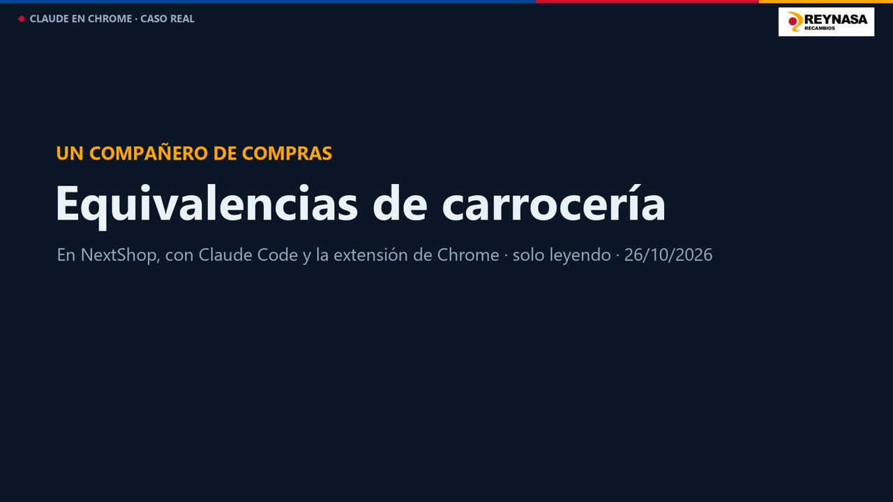
Un compañero de Compras · 1:27 · Equivalencias de carrocería en NextShop: 200 referencias, una columna por marca, mientras él seguía con lo suyo.
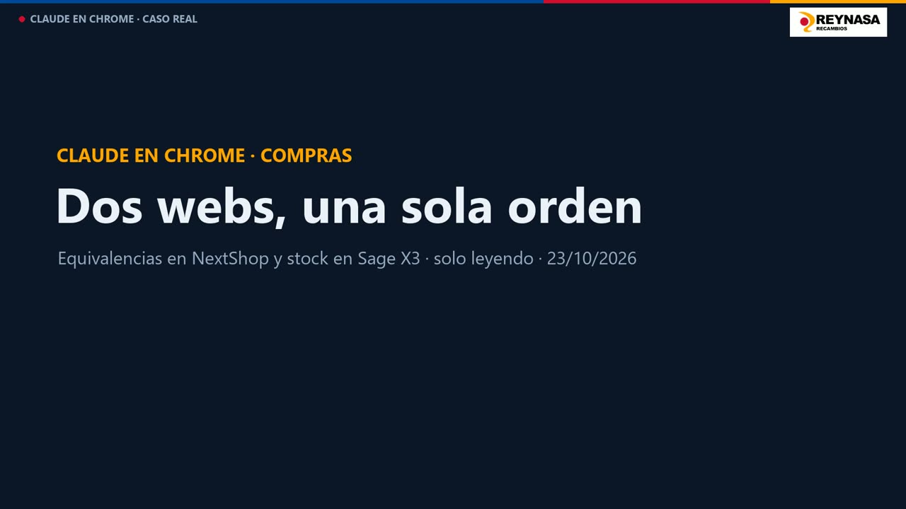
Rubén · 1:23 · Equivalencias en NextShop y stock en Sage: una alternativa con stock un 84 % más barata.
Pulsa Descargar y baja el ZIP. No lo descomprimas.
En Claude: Personalizar › Skills › + › Subir una skill.
En Cowork o Claude Code, escribe /skill-agentica y cuéntale tu proceso.
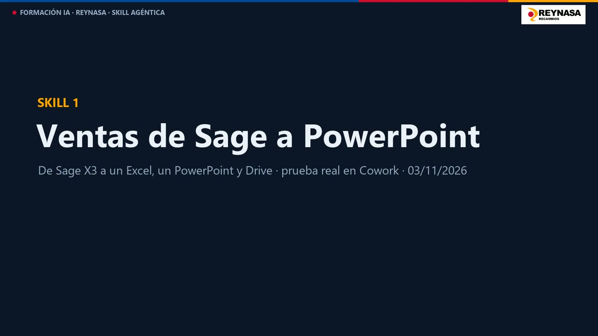
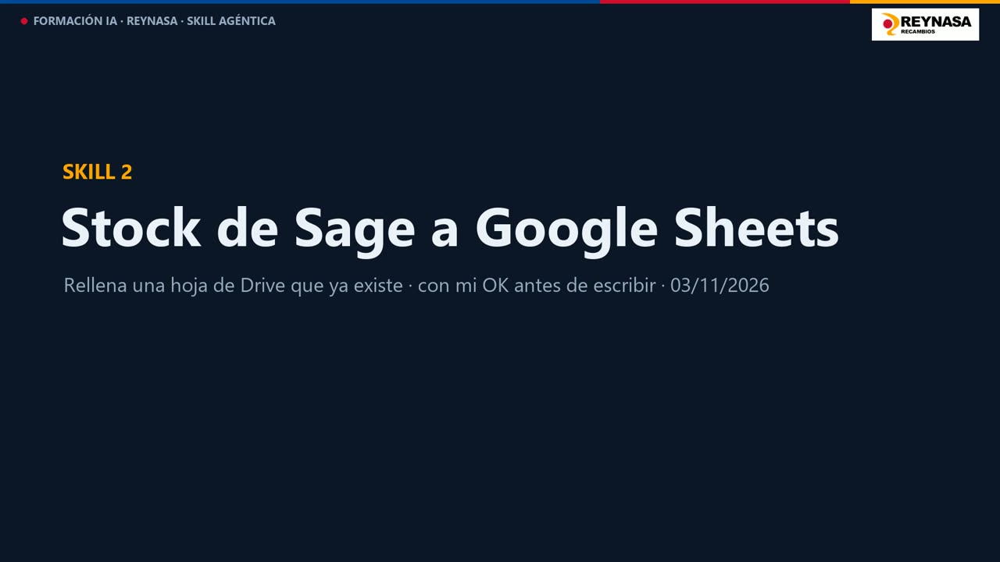
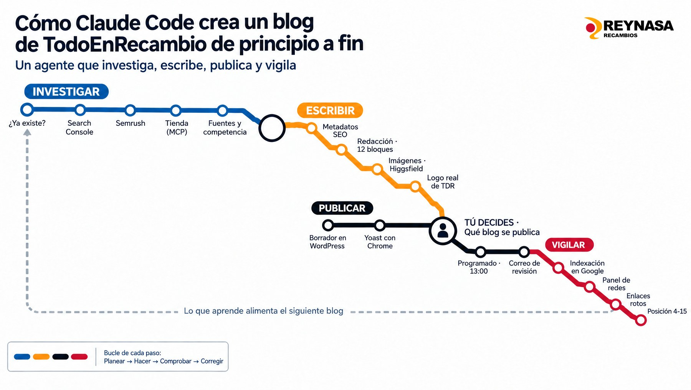
Pulsa cada fase para ver qué hace y con qué skills. Siempre activa: buenas-practicas-reynasa.
Ver un blog publicado ↗Candado o cadena antirrobo para moto: cuál protege más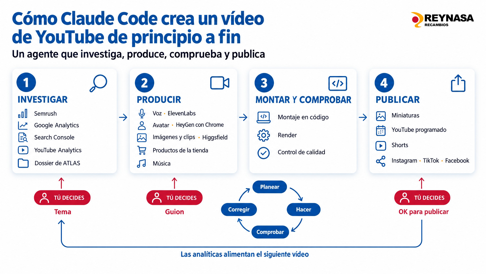
Pulsa cada fase para ver qué hace y con qué. Todo vive en la carpeta RRSS TDR AUTOMATIZADO: skills, memoria, programas y claves.
Instagram ↗@todoenrecambioTikTok ↗@todoenrecambioVer el último vídeo ↗Batería de moto: por qué se descarga en invierno, cuánto dura y cómo mantenerla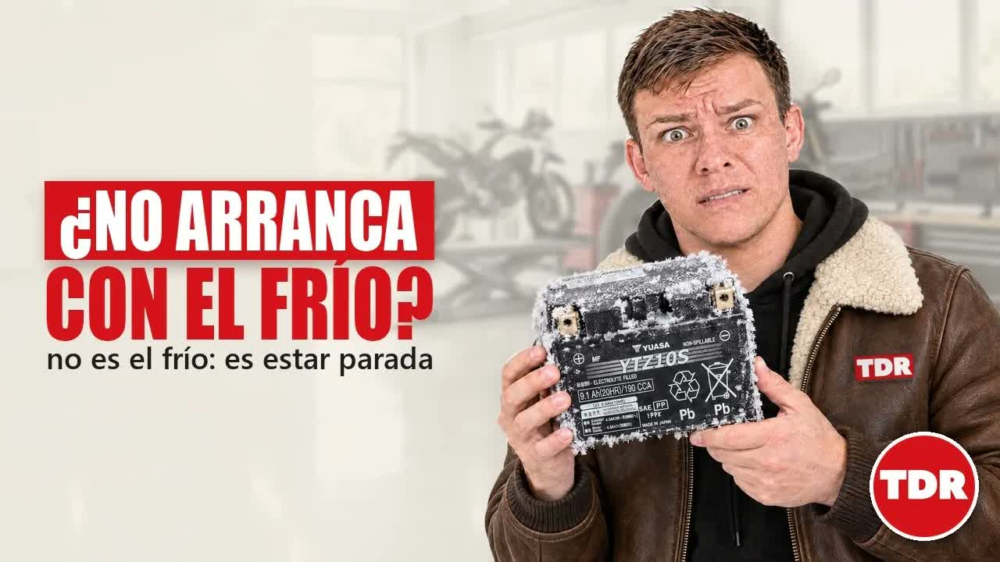
▶ 8:38 Noviembre de 2026 · vídeo 34Batería de moto: por qué se descarga en invierno, cuánto dura y cómo mantenerlaCada vídeo deja skills y reglas nuevas, y lo que falla en uno se arregla para el siguiente. Pasa igual con cualquier trabajo repetitivo de oficina: la primera vez sale bien; la décima, mejor y en menos tiempo.
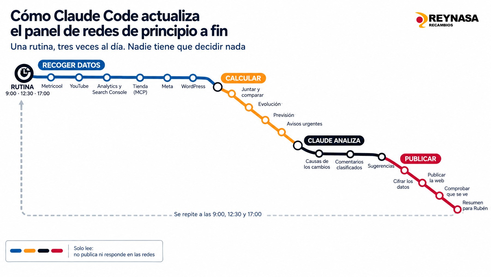
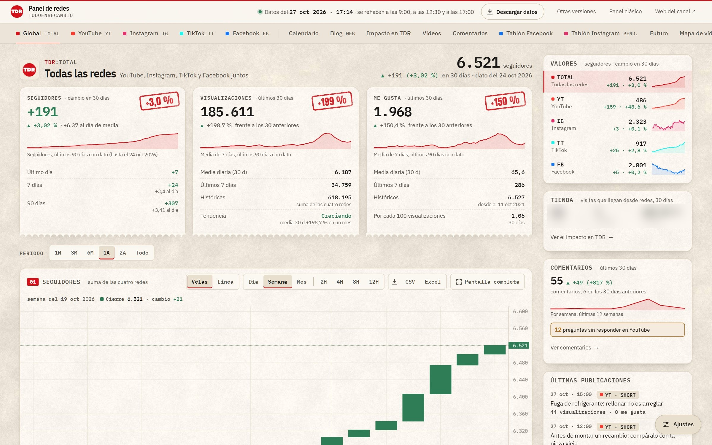
En vivo: rubeniarey.github.io/tdr-canal-youtube/panel · captura del 27/10
Sus 19 apartados · en naranja, los nuevos desde la captura9:00 · 12:30 · 17:00Actualiza el panel privado: redes, tienda, Google, comentarios, previsión y sugerencias.
Cada día · 10:00Sube 4 shorts pendientes, privados y con su fecha.
Cada día · 12:00Corrige hasta 28 descripciones del canal.
Lunes · 8:10Rehace el dashboard SEO del blog y te deja el correo con el PDF en borradores.
Lunes · 8:10Prepara los correos de revisión de los blogs de la semana: moto y coche, cada uno a su revisor.
Cada día · 9:00Radar de Nate Herk: lo nuevo, y para qué serviría en cada departamento.
Días 1 y 15 · 10:00Limpieza del ordenador: recomienda qué borrar. Nunca borra.
tareas programadas
salen cada día, y 8 los lunes
condición: el ordenador encendido y conectado
Cada rutina es una tarea con su hora: «todos los lunes a las 8:10, haz esto». Se crean en Cowork o en Claude Code.
Probado: ya lo hemos hecho en Reynasa. El resto salió en reuniones con cada departamento: se prueba antes de usarlo.
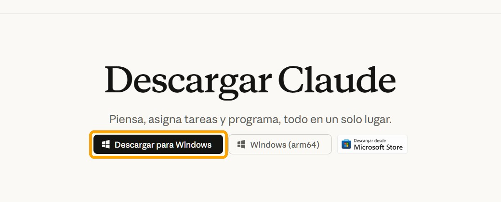
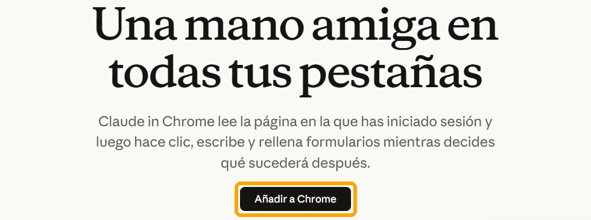
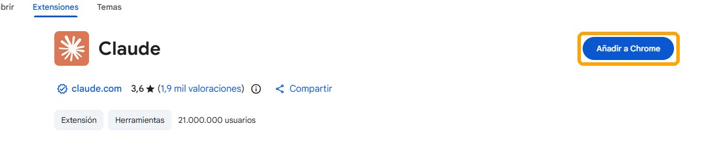
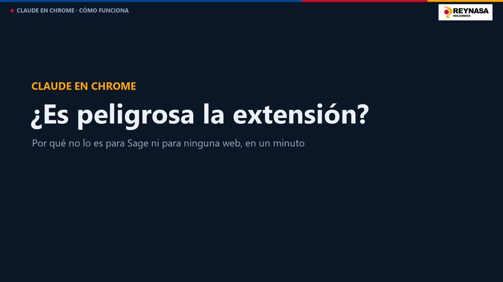
Un comando es una orden directa al ordenador: mover un archivo, abrir un programa, convertir un vídeo.
Si se puede hacer sin tocar tu ordenador, Cowork. Si hay que ejecutar algo en tu PC, Claude Code. En la siguiente, punto por punto.
| Lo que necesitas | Cowork | Claude Code | Cómo lo sabemos |
|---|---|---|---|
| Coger lo que descargas en Descargas | No, si no conectas esa carpeta | Sí, con un comando | Probado el 03/11 |
| Subir un archivo de tu PC a Drive | No: el conector pide el archivo pegado como texto | Sí, con la extensión de Chrome | Probado el 03/11 |
| Grabar la pantalla en vídeo | Solo el GIF de la pestaña | Sí, el escritorio entero | Pilotos del 22/10 |
| Usar programas de tu PC: Python, FFmpeg, montar vídeos | No: corre aislado de tu Windows | Sí | Vídeos de YouTube y de esta formación |
| Abrirte un archivo o una carpeta en pantalla | No llega a tu Windows | Sí | Probado en Code |
| Dejarte algo copiado para pegar con Ctrl+V | En principio no | Sí | Probado en Code |
| Rutinas con claves y programas del PC (panel de redes, shorts) | Sin probar: las claves están en el PC | Sí, 3 veces al día | Rutinas de Rubén |
Sage y otras webs con Chrome, Excel y PowerPoint, Drive y Gmail, varios agentes a la vez y rutinas. Por eso: empieza en Cowork y pasa a Code cuando toque tu ordenador.
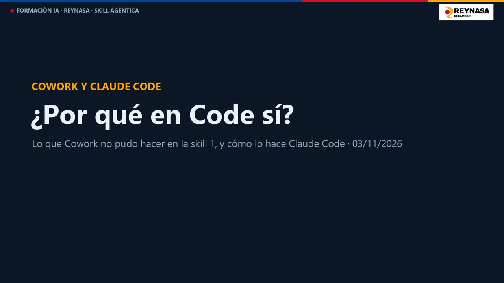
Quién eres y cómo trabajas. Vale para todas las carpetas.
C:\Users\tu-usuario\.claude\CLAUDE.mdLo pides túLas reglas de ese proyecto. Solo vale en esa carpeta.
Escritorio\tu-carpeta\CLAUDE.mdLo pides túApuntes que Claude toma solo mientras trabajáis: tus correcciones, tus preferencias y en qué punto está cada cosa. Una por carpeta.
…\.claude\projects\tu-carpeta\memory\Funciona solaLa 3 funciona sola. La 1 y la 2 hay que pedirlas, y pedir que se mantengan. Si no, se crean y se quedan como estaban.
Con quién es Rubén, sus proyectos y las normas de Reynasa. Crece porque dentro le pide a Claude que lo actualice.
Con las reglas de oro de las redes de TodoEnRecambio: nada se publica sin el OK de Rubén y el logo de TDR, siempre el real.
Guardados solos, como «el chico de los avatares es siempre Rubén» o qué modelo usar para los vídeos de producto.
Quiero que tengas memoria de mi trabajo entre conversaciones. Hazlo así: 1. Crea un CLAUDE.md general con quién soy, mi puesto, cómo trabajo y mis herramientas. 2. Crea un CLAUDE.md en esta carpeta con las reglas y el estado de este proyecto. 3. Usa tu memoria automática para el detalle del día a día. 4. Actualízalos tú solo: cuando aprendas algo que dure, cuando te corrija o cuando te diga «recuerda esto», guárdalo con la fecha. Lo que vale para todo, en el general; lo de este proyecto, en el de la carpeta. 5. Pon esta misma instrucción al principio de cada CLAUDE.md, para que lo sigas haciendo en cualquier conversación. 6. Si te pregunto por algo que no tengas guardado, búscalo en nuestras conversaciones anteriores de esta carpeta antes de decirme que no lo sabes. 7. Mantenlos cortos y al día: corrige lo que cambie y quita lo que ya no valga. Cada vez que guardes algo, dímelo en una línea. Nunca guardes contraseñas ni datos personales de otras personas.
los casos que habéis visto al principio: el blog de TDR, el canal de YouTube, el panel de redes, las rutinas y las dos skills de Sage.
Elegir el tema, leer el guion y dar el OK (y hoy, el avatar de HeyGen). Lo demás lo hace Claude Code: varias horas de ordenador por vídeo, sin que yo esté delante.
| Necesito… | Uso | |
|---|---|---|
| Entrar en Sage, TecCom o una web con mi sesión | La extensión de Chrome | desde Cowork o Claude Code |
| Excel, Word, PowerPoint, Drive y Gmail | Cowork | con tus carpetas y conectores |
| Mover archivos del PC, subirlos a Drive, encadenar skills | Claude Code | en tu ordenador |
| Que se haga solo cada lunes | Una rutina | en Cowork o Code; si hace falta, entras tú |
| Pedirlo por correo y olvidarme | ATLAS | atlas@reynasa.com |
Empieza en Cowork. Si toca tu ordenador, Claude Code.
Claude y Anthropic son marcas de Anthropic. Esta presentación no es oficial.